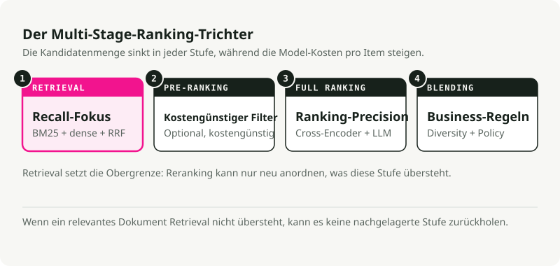
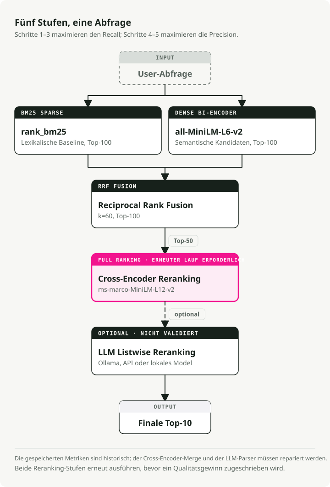
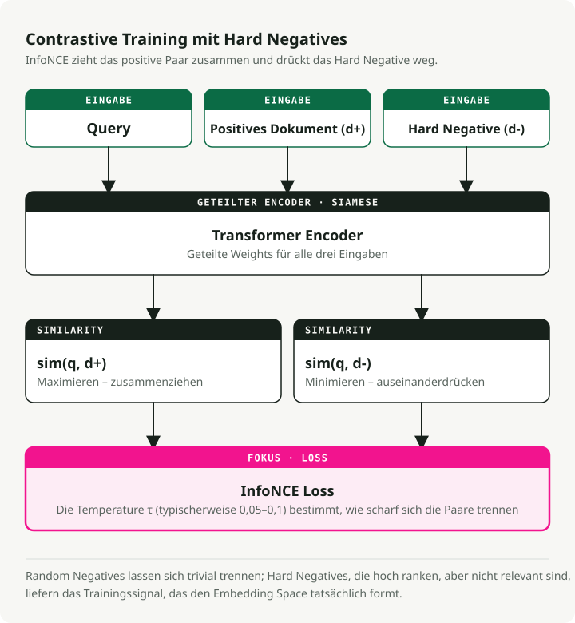
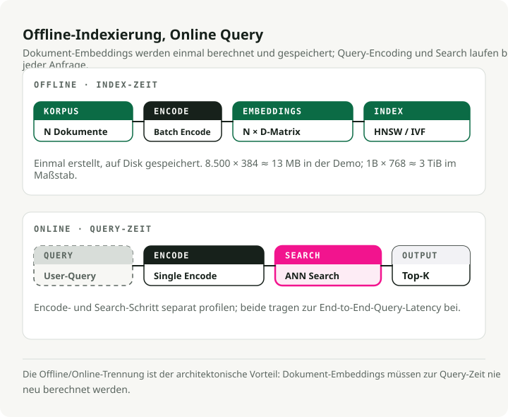
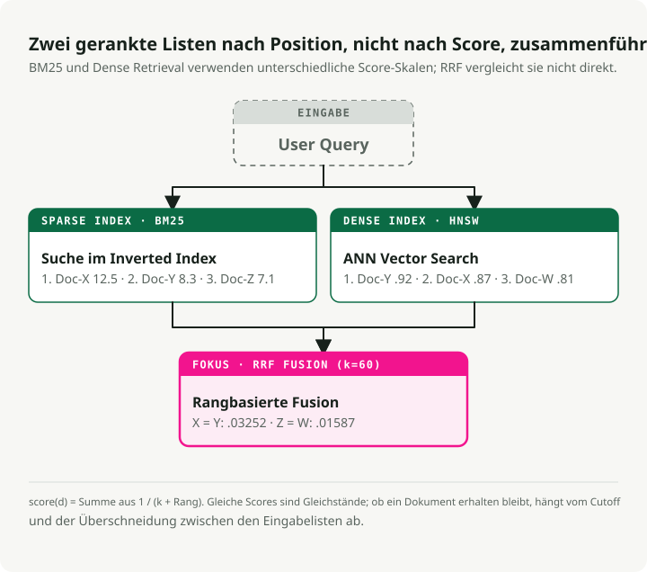
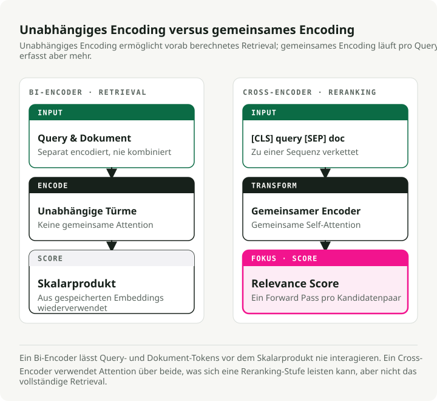
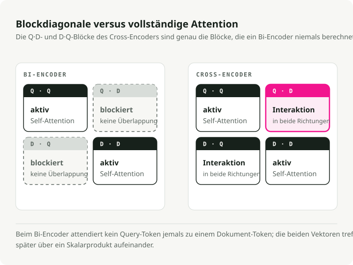
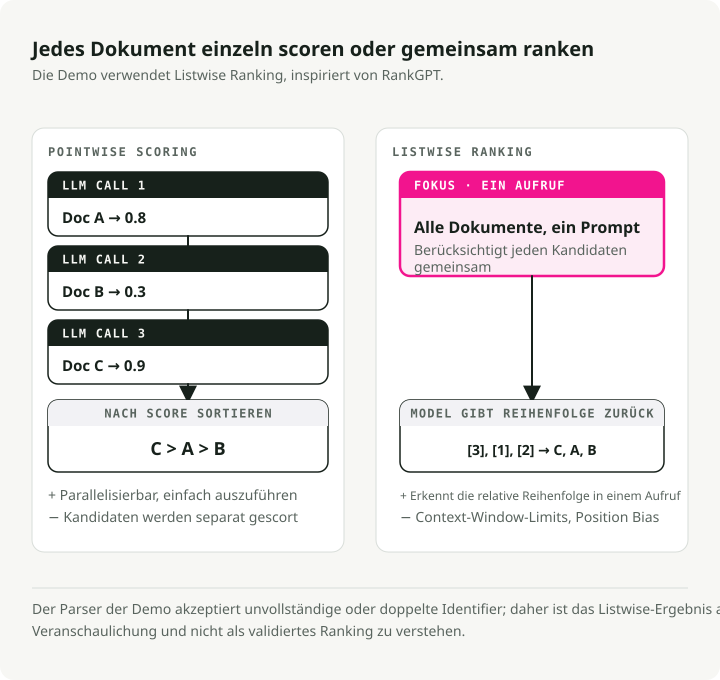
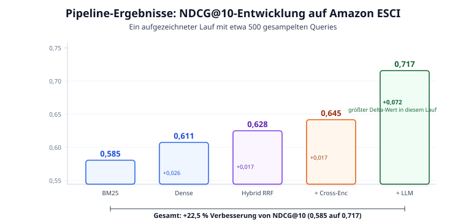
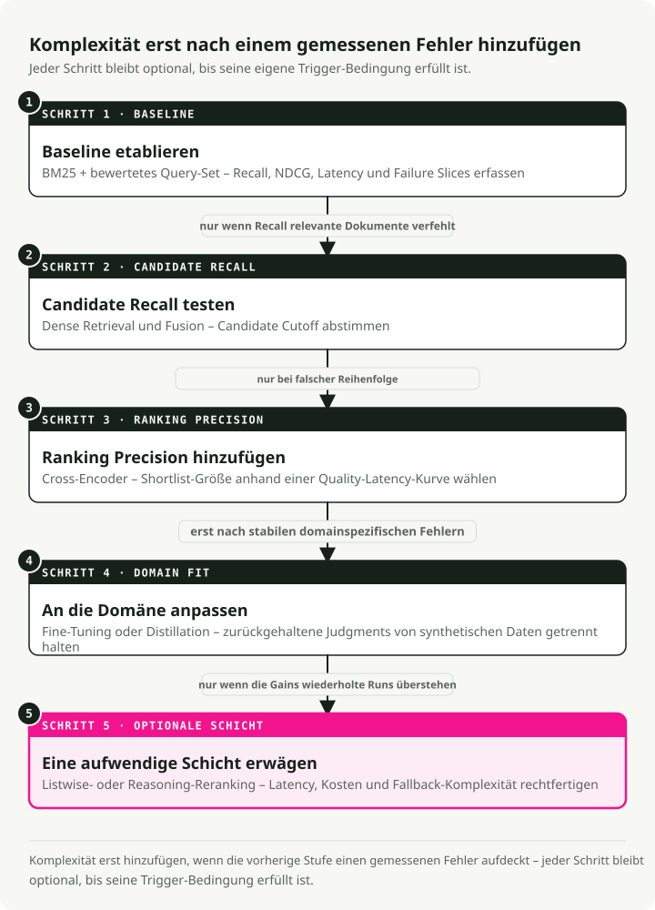

Automatische Übersetzung
Dieser Artikel wurde automatisch aus der englischen Originalversion übersetzt.
Search-Ranking-Stack im Jahr 2026: BM25, Embeddings, Cross-Encoder und LLM-Reranking
Suche ist schon seit einer Weile kein String-Matching-Problem mehr. Wenn jemand „wireless headphones“ in eine Produktsuchmaschine eingibt, erwartet diese Person mehr als nur Artikel, die diese beiden Wörter enthalten. Erwartet wird das beste Ergebnis unter Berücksichtigung semantischer Relevanz, Produktqualität, Nutzerpräferenzen und Verfügbarkeit. Die Lücke zwischen dem, was BM25 zurückgibt, und dem, was Nutzer tatsächlich wollen, hat verändert, wie Suchsysteme gebaut werden.
Dieser Beitrag führt durch einen modernen Search-Ranking-Stack: eine mehrstufige Pipeline, die BM25 Sparse Retrieval, dichte semantische Embeddings, Reciprocal Rank Fusion, Cross-Encoder-Reranking und LLM-Listwise-Ranking kombiniert. Ich habe eine funktionierende Demo gebaut, die jede Stufe auf dem Amazon-ESCI-Produktsuchdatensatz benchmarkt, sodass der Beitrag jeder Schicht in realen Zahlen sichtbar wird.
Kurzfassung: Eine mehrstufige Hybrid-Pipeline ist der produktionsfreundliche Default. BM25 und Dense Retrieval parallel ausführen, mit Reciprocal Rank Fusion zusammenführen, die überlebenden Kandidaten mit einem Cross-Encoder neu ranken und für die letzte Präzisionsschicht ein LLM einsetzen. Auf dem Amazon-ESCI-Benchmark ergibt das eine 22,5%ige Verbesserung von NDCG@10 gegenüber BM25 allein (0,585 auf 0,717). Der LLM-Reranker liefert den größten einzelnen Sprung (+0,072).
Wie wir hier gelandet sind
Search Ranking hat sich grob durch drei Phasen bewegt, von denen jede eine spezifische Grenze des Vorherigen behoben hat. Der moderne Stack ergibt erst Sinn, wenn man den Weg dorthin gesehen hat.
BM25 und lexikalisches Retrieval
Über Jahrzehnte war BM25 der Default. Es ist ein probabilistisches Modell, das Dokumente anhand der Häufigkeit von Query-Termen im Dokument bewertet, normalisiert nach Dokumentlänge und inverser Dokumentfrequenz (IDF).
BM25 ist stark bei exaktem Keyword-Matching. Die Suche nach einem bestimmten Fehlercode, einer Produkt-SKU oder einem HTTP-Statuscode funktioniert, weil das System nur literalen Token-Overlap braucht. Der Haken ist das Vocabulary-Mismatch-Problem: Eine Query nach „cheap laptop“ verpasst Dokumente über „budget notebook computer“, weil die Wörter nicht übereinstimmen. BM25 hat kein Verständnis für semantische Intention.
Trotzdem ist BM25 eine solide Baseline. Es erreicht 0,429 durchschnittliches nDCG@10 über die 18 Datensätze des BEIR-Benchmarks hinweg und schlägt auf argumentativen Retrieval-Tasks wie Touche-2020 weiterhin einige neuronale Modelle.
Dense Retrieval und Embeddings
Mit BERT und dem Transformer kam Dense Retrieval. Statt Keywords zu matchen, werden Queries und Dokumente in einen gemeinsamen hochdimensionalen Vektorraum gemappt (typischerweise 768 oder 1024 Dimensionen). Relevanz wird zur Kosinus-Ähnlichkeit zwischen zwei Vektoren.
Die Bi-Encoder-Architektur (oder „Two-Tower“) verarbeitet Query und Dokument unabhängig voneinander durch separate Encoder-Tower und erzeugt Embeddings fester Länge. Dokumentvektoren lassen sich offline vorab berechnen und indexieren und dann per Approximate Nearest Neighbor (ANN) schnell abrufen. Jetzt landen „cheap laptop“ und „budget notebook“ nah beieinander im Vektorraum.
Unter der Haube nutzen Bi-Encoder eine siamesische Architektur (Sentence-BERT, Reimers & Gurevych, EMNLP 2019): Beide Tower teilen sich dieselben Transformer-Gewichte. Jeder Tower verarbeitet seinen Input-Text und mittelt dann die tokenweisen Hidden States zu einem einzelnen Vektor fester Länge (384 oder 768 Dimensionen sind üblich). Das Teilen der Gewichte bringt Queries und Dokumente in denselben semantischen Raum, was Kosinus-Ähnlichkeit überhaupt erst sinnvoll macht.
Diese Modelle werden mit kontrastivem Lernen trainiert, meist mit der InfoNCE-Loss. Gegeben ein Batch aus Paaren (query, positive_document) maximiert das Ziel sim(query, positive_doc) und minimiert sim(query, negative_docs). Negative Beispiele kommen aus den Positiven anderer Queries im selben Batch (in-batch negatives). Ein Temperaturparameter \(\\tau\) steuert, wie scharf die Verteilung ist: niedrigere Werte zwingen das Modell zu härteren Unterscheidungen zwischen Positiven und Negativen.
Der größte Hebel für Bi-Encoder-Performance ist die Qualität der Trainingsdaten. Modelle starten mit Paaren (query, positive_document) aus Datensätzen wie MS MARCO und werden dann mit hard negatives ergänzt — Dokumenten, die das aktuelle Modell hoch rankt, die aber tatsächlich nicht relevant sind. Zufällige Negative sind zu leicht und liefern dem Modell nichts zum Lernen. Hard negatives zwingen es, subtile Unterschiede zu lernen. Das SimANS-Framework (Zhou et al., EMNLP 2022) formalisiert das: einfache Negative ausschließen (zu niedriger Rang) ebenso wie potenzielle False Negatives (zu hoher Rang) und auf dem „harten Mittelfeld“ trainieren.
Die Kosten liegen im Representation Bottleneck. Bi-Encoder komprimieren alle semantischen Nuancen in einen einzelnen Vektor fester Größe und verpassen deshalb oft fein granularen Interaktionen zwischen spezifischen Query-Termen und spezifischem Dokumentinhalt.
Cross-Encoder und LLMs
Cross-Encoder (Nogueira & Cho, 2019) speisen Query und Dokument gemeinsam als verkettete Sequenz in einen Transformer ein ([CLS] Query [SEP] Document), sodass jedes Query-Token via voller Self-Attention auf jedes Dokument-Token achten kann. Diese tiefe Interaktion erfasst Nuancen, die unabhängige Kodierung verpasst.
LLM-Reranking treibt das weiter. Ein großes Sprachmodell fungiert als Zero-Shot-Listwise-Ranker — effektiv ein menschlicher Judge, der begründen kann, warum ein Dokument besser ist als ein anderes. RankGPT (Sun et al., EMNLP 2023 Outstanding Paper) zeigte, dass GPT-4 als Zero-Shot-Listwise-Reranker überwachte Methoden erreicht oder schlägt.
Die Präzision ist stark. Die Kosten auch. Scores lassen sich nicht vorab berechnen, und Inferenz ist 100x langsamer als Bi-Encoder-Retrieval. Diese Kosten erzwingen das Architekturpattern, das man heute in moderner Suche sieht: den mehrstufigen Funnel.
Der mehrstufige Funnel
Einen teuren Cross-Encoder oder ein LLM über Millionen Dokumente laufen zu lassen, ist nicht praktikabel, daher nutzen moderne Search-Stacks einen Funnel. Jede Stufe reduziert den Kandidatenpool, während die Modellkomplexität steigt.
Eine einstufige Suche ist entweder zu langsam (komplexe Modelle auf allem) oder zu unpräzise (einfache Modelle überall). Der Funnel ist der Kompromiss und im großen Maßstab das Standardlayout in Produktion.

| Stage | Candidate Pool | Primary Objective | Model Complexity | Latency Budget |
|---|---|---|---|---|
| Retrieval | 10^9 - 10^12 | Maximale Recall | Niedrig (BM25, Bi-Encoder) | < 50ms |
| Pre-Ranking | 10^4 - 10^5 | Effizientes Filtern | Mittel (Two-Tower, GBDT) | < 100ms |
| Full Ranking | 10^2 - 10^3 | Maximale Präzision | Hoch (Cross-Encoder, LLMs) | < 500ms |
| Blending | 10^1 - 10^2 | Diversität und Safety | Regeln und Multi-Objective | < 20ms |
Retrieval setzt die Obergrenze, und Reranking optimiert innerhalb dieser Grenze. Wenn ein relevantes Dokument das Retrieval nicht überlebt, kann kein nachgelagertes Modell es wiederherstellen.
Die Demo: eine fünfstufige Pipeline
Um das konkret zu machen, habe ich eine search-ranking-stack-Demo gebaut, die auf dem Produktsuchbenchmark Amazon ESCI eine fünfstufige Pipeline ausführt. Jede Stufe wird separat gemessen, damit sichtbar wird, woher die Gewinne tatsächlich kommen.

Die Pipeline:
- BM25 Sparse Retrieval — lexikalische Baseline (rank_bm25)
- Dense Bi-Encoder Retrieval — semantische Suche (all-MiniLM-L6-v2)
- Hybrid RRF Fusion — kombiniert Sparse- und Dense-Ergebnisse
- Cross-Encoder Reranking — fein granularer Relevanz-Score (ms-marco-MiniLM-L-12-v2)
- LLM Listwise Reranking — reasoning-basiertes finales Ranking (Ollama / Claude / lokal)
Die Schritte 1--3 bilden die Retrieval-Stufe des Funnels (Recall maximieren); die Schritte 4--5 die Full-Ranking-Stufe (Präzision maximieren). Die Demo überspringt Pre-Ranking und Blending. Bei ~8.500 Dokumenten kann man sich leisten, alle hybriden Ergebnisse direkt ins Reranking zu schicken.
Quick Start
git clone https://github.com/slavadubrov/search-ranking-stack.git
cd search-ranking-stack
uv sync
# Download and sample ESCI dataset (~2.5GB download, ~5MB sample)
uv run download-data
# Run the full pipeline (without LLM reranking)
uv run run-all
# Run with LLM reranking via Ollama
uv run run-all --llm-mode ollama
Der Datensatz: Amazon ESCI
Die Demo verwendet den Amazon Shopping Queries Dataset (ESCI) aus dem KDD Cup 2022 — einen realen Produktsuchbenchmark mit vierstufigen abgestuften Relevanzlabels:
| Label | Gain | Bedeutung | Beispiel (Query: „wireless headphones“) |
|---|---|---|---|
| Exact (E) | 3 | Erfüllt alle Query-Anforderungen | Sony WH-1000XM5 Wireless Headphones |
| Substitute (S) | 2 | Funktionale Alternative | Wired headphones with Bluetooth adapter |
| Complement (C) | 1 | Nützlicher verwandter Artikel | Headphone carrying case |
| Irrelevant (I) | 0 | Keine sinnvolle Beziehung | USB charging cable |
Abgestufte Relevanz ist wichtig, weil man damit NDCG (Normalized Discounted Cumulative Gain) verwenden kann, was ein „perfektes“ Ranking von einem „nur ausreichenden“ trennt. Binäre Metriken behandeln beides als gleich relevant und können verschiedene Relevanzgrade an derselben Position nicht unterscheiden.
Ich habe ~500 „harte“ Queries (das small_version-Flag in ESCI) mit ~8.500 Produkten und ~12.000 Judgments gesampelt. Klein genug, um in Minuten auf einem Laptop zu laufen, groß genug für statistisch aussagekräftige Ergebnisse.
Retrieval: hybride Suche
Die Aufgabe der Retrieval-Schicht ist es, Recall zu maximieren — das Netz so weit wie möglich auszuwerfen, damit nichts Relevantes durchrutscht.
BM25: die lexikalische Baseline
BM25 bewertet Dokumente über Term-Overlap mit der Query, mit Sättigung der Termfrequenz und Normalisierung der Dokumentlänge:
Dabei ist \(\\text{IDF}(t)\) die inverse Dokumentfrequenz des Terms \(t\), \(tf(t,d)\) die Termfrequenz in Dokument \(d\), \(|d|\) die Dokumentlänge und \(\\text{avgdl}\) die durchschnittliche Dokumentlänge über den Korpus. Zwei Parameter sind entscheidend: \(k_1\) (typischerweise 1,2--2,0) steuert die TF-Sättigung — also wie schnell wiederholte Terme keinen Mehrwert mehr liefern — und \(b\) (typischerweise 0,75) steuert die Dokumentlängen-Normalisierung.
Die Implementierung ist kurz. Einfache Whitespace-Tokenisierung mit rank_bm25:
# src/search_ranking_stack/stages/s01_bm25.py
from rank_bm25 import BM25Okapi
def run_bm25(data: ESCIData, top_k: int = 100):
doc_ids = list(data.corpus.keys())
tokenized_corpus = [text.lower().split() for text in data.corpus.values()]
bm25 = BM25Okapi(tokenized_corpus)
results = {}
for query_id, query_text in data.queries.items():
scores = bm25.get_scores(query_text.lower().split())
top_indices = np.argsort(scores)[::-1][:top_k]
results[query_id] = {doc_ids[idx]: float(scores[idx]) for idx in top_indices}
return results
BM25 landet bei Recall@100 von 0,741 — 74% der relevanten Produkte tauchen irgendwo in den Top 100 auf. Nicht schlecht für eine rein lexikalische Methode, aber 26% der relevanten Artikel sind für jede nachgelagerte Stufe unsichtbar.
Dense Bi-Encoder: semantisches Retrieval
Der Bi-Encoder mappt Queries und Dokumente unabhängig voneinander in einen gemeinsamen Embedding-Raum:
# src/search_ranking_stack/stages/s02_dense.py
from sentence_transformers import SentenceTransformer
model = SentenceTransformer("sentence-transformers/all-MiniLM-L6-v2")
# Encode corpus once, cache to disk
corpus_embeddings = model.encode(
doc_texts,
batch_size=128,
normalize_embeddings=True, # Cosine sim = dot product
convert_to_numpy=True,
)
# At query time: encode query, compute dot product
query_embeddings = model.encode(query_texts, normalize_embeddings=True)
similarity_matrix = np.dot(query_embeddings, corpus_embeddings.T)
Mit normalisierten Embeddings reduziert sich Kosinus-Ähnlichkeit auf ein Dot Product — eine einzige Matrixmultiplikation retrievt alle Queries auf einmal. Das 22M-Parameter-Modell all-MiniLM-L6-v2 läuft problemlos auf CPU und hebt Recall@100 auf 0,825, eine Verbesserung von 11% gegenüber BM25.
Wie Bi-Encoder gute Repräsentationen lernen
Das Training von Bi-Encodern läuft meist in zwei Phasen. Zuerst wird das Modell auf Natural Language Inference (NLI) und Semantic Textual Similarity (STS) vortrainiert, was allgemeines semantisches Verständnis vermittelt — das Modell lernt, dass „a cat sits on a mat“ und „a feline rests on a rug“ ähnliche Embeddings haben sollten. Danach wird es auf retrievalspezifischen Daten wie MS MARCO feinjustiert, wo es lernt, dass eine Suchquery und ihre relevante Passage näher beieinander liegen sollten als die Query und irrelevante Passagen.
Die kritische Zutat in der zweiten Phase ist Hard Negative Mining. Zufällige Negative (z. B. ein Dokument über Kochen gepaart mit einer Query über Kopfhörer) sind trivial leicht zu unterscheiden — das Modell lernt nichts daraus. Stattdessen lässt man das aktuelle Modell selbst Dokumente finden, die es hoch rankt, die aber tatsächlich nicht relevant sind.
Der SimANS-Ansatz (Simple Ambiguous Negatives Sampling) formalisiert das: Alle Dokumente mit dem aktuellen Bi-Encoder ranken, dann einfache Negative ausschließen (zu niedrig gerankt — das Modell beherrscht sie schon) und potenzielle False Negatives (zu hoch gerankt — sie könnten tatsächlich relevant, aber unlabeled sein). Das „harte Mittelfeld“ liefert das maximale Lernsignal.
# What a training triplet looks like after hard negative mining
training_triplet = {
"query": "wireless noise canceling headphones",
"positive": "Sony WH-1000XM5 Wireless Noise Cancelling Headphones",
"negative": "Sony headphone replacement ear pads", # Hard negative: same brand, related product, but wrong intent
}
# The bi-encoder must learn that "ear pads" is NOT what the user wants,
# even though it shares many tokens with the positive document.
Die kontrastive Loss-Funktion (InfoNCE) verbindet das Ganze. Für jede Query \(q\) mit positivem Dokument \(d^+\) und einer Menge negativer Dokumente \(\\{d^-_1, \\ldots, d^-_n\\}\):
Dabei ist \(\\text{sim}(q, d)\) die Kosinus-Ähnlichkeit zwischen Query- und Dokument-Embeddings, und \(\\tau\) der Temperaturparameter (typischerweise 0,05--0,1), der steuert, wie scharf die Verteilung ist — niedrigere Werte machen den Loss empfindlicher gegenüber harten Negativen. Im Wesentlichen ist es eine Softmax Cross-Entropy: die Ähnlichkeit des positiven Paars relativ zu allen Negativen nach oben drücken. Wenn \(\\tau\) klein ist, erzeugen schon geringe Ähnlichkeitsunterschiede große Gradienten, was das Modell zu feineren Unterscheidungen zwingt.

Bi-Encoder-Embeddings im großen Maßstab serven
Der architektonische Vorteil von Bi-Encodern ist die saubere Offline/Online-Aufteilung. Alle Dokument-Embeddings werden einmal beim Indizieren berechnet und in einem Vektorindex gespeichert. Zur Query-Zeit braucht nur die Query einen einzelnen Forward Pass durch den Encoder (~5ms), gefolgt von einer ANN-Suche über vorab berechnete Embeddings (~10ms). Diese Asymmetrie macht Dense Retrieval im großen Maßstab praktikabel.
In der Demo ist die Mathematik noch überschaubar: 8.500 Dokumente \(\\times\) 384 Dimensionen \(\\times\) 4 Byte pro Float = ~13 MB Embeddings. Im Produktionsmaßstab sind die Zahlen nicht mehr überschaubar: 1 Milliarde Dokumente mit 768-dimensionalen Embeddings brauchen ~3 TiB Speicher. Hier kommen Quantisierung (32-Bit-Floats in 8-Bit-Integer komprimieren), Product Quantization (Vektoren in Unterräume zerlegen) und SSD-gestützte Indizes wie DiskANN ins Spiel. Der Abschnitt Vector Indexing: HNSW vs. IVF behandelt die Index-Algorithmen.

Warum hybrid: BM25 und Dense haben komplementäre Fehlerbilder
Keine der beiden Methoden reicht allein aus. BM25 gewinnt bei Eigennamen, spezifischen Produkt-SKUs und Fehlercodes — „iPhone 15 Pro Max 256GB“ braucht exaktes Token-Matching. Dense Retrieval gewinnt bei Vocabulary Mismatch — „cheap laptop“ auf „budget notebook computer“ abzubilden, braucht semantisches Verständnis.
Der Standard-Fix ist hybride Suche: beide Retrieval-Methoden parallel ausführen und die Ergebnisse dann fusionieren.
Reciprocal Rank Fusion (RRF)
Die Herausforderung bei hybrider Suche ist, dass BM25 und Dense Retrieval Scores auf völlig unterschiedlichen Skalen produzieren. BM25-Scores sind unbeschränkt (0 bis 100+), und Kosinus-Ähnlichkeit ist auf -1 bis 1 beschränkt. Eine einfache lineare Kombination braucht laufendes Tuning, um sinnvoll zu bleiben.

Reciprocal Rank Fusion (Cormack et al., 2009) verwirft die Rohscores vollständig und nutzt nur die Rangposition:
Dabei ist \(k\) eine Glättungskonstante (typischerweise 60), die die Dominanz von Ausreißern abmildert. RRF belohnt Elemente, die in beiden Methoden konsistent weit oben ranken, auch wenn ein System ihnen deutlich höhere Scores gibt als das andere. Durch den rangbasierten Ansatz verschwindet das Problem inkompatibler Skalen.
Die Implementierung:
# src/search_ranking_stack/stages/s03_hybrid_rrf.py
def reciprocal_rank_fusion(ranked_lists, k=60, top_k=100):
fused_results = {}
for query_id in all_query_ids:
rrf_scores = defaultdict(float)
for results in ranked_lists:
sorted_docs = sorted(results[query_id].items(),
key=lambda x: x[1], reverse=True)
for rank, (doc_id, _score) in enumerate(sorted_docs, start=1):
rrf_scores[doc_id] += 1.0 / (k + rank)
sorted_rrf = sorted(rrf_scores.items(),
key=lambda x: x[1], reverse=True)[:top_k]
fused_results[query_id] = dict(sorted_rrf)
return fused_results
Hybrid-RRF erreicht Recall@100 von 0,842 und NDCG@10 von 0,628 — besser als sowohl BM25 (0,585) als auch Dense (0,611) allein. Dokumente müssen nur in einer Methode gut ranken, um die Fusion zu überleben.
Cross-Encoder-Reranking
Mit 100 hybriden Kandidaten pro Query kann man sich ein teureres Modell leisten. Der Cross-Encoder verarbeitet Query und Dokument gemeinsam durch einen einzelnen Transformer, mit voller Cross-Attention zwischen allen Tokens.

Warum Cross-Attention wichtig ist
Der eigentliche Unterschied liegt in der Attention-Matrix. In einem Bi-Encoder ist Attention blockdiagonal: Query-Tokens achten nur auf andere Query-Tokens, und Dokument-Tokens nur auf andere Dokument-Tokens. Die beiden Repräsentationen treffen sich nie auf Token-Ebene — sie schneiden sich erst am Ende über ein Dot Product. Ein Cross-Encoder berechnet die volle Attention-Matrix, in der jedes Query-Token auf jedes Dokument-Token achtet und umgekehrt. Diese Cross-Attention ermöglicht tiefe tokenweise Interaktion.

Im Bi-Encoder erzeugt die Query „apple“ jedes Mal dasselbe Embedding. Sie wird unabhängig kodiert, bevor irgendein Dokument gesehen wird. Ein Cross-Encoder sieht Query und Dokument gleichzeitig und kann Mehrdeutigkeit im Kontext auflösen. Die Vorteile gehen weit über Polysemie hinaus:
- Negation: eine Query nach „headphones that are not wireless“ — Bi-Encoder-Embeddings für „not wireless“ sind fast identisch mit „wireless“, weil die Negation den gemittelten Vektor kaum verschiebt. Ein Cross-Encoder sieht das Token „not“, das direkt auf „wireless“ achtet, und bewertet kabelgebundene Kopfhörer korrekt höher.
- Qualifikation: eine Query nach „laptop under \\(500“ — die Preisbedingung verändert die Relevanz. Ein Cross-Encoder kann von „\\\)500“ auf den im Produkttext genannten Preis attendieren und prüfen, ob die Bedingung erfüllt ist.
Die Cross-Encoder-Eingabe wird als [CLS] query tokens [SEP] document tokens [SEP] formatiert. [CLS] ist ein Klassifikationstoken, dessen finaler Hidden State durch einen linearen Head geführt wird, um einen einzelnen Relevanz-Score zu erzeugen. Segment-Embeddings unterscheiden Query-Tokens von Dokument-Tokens, und [SEP] markiert die Grenze zwischen den Segmenten.
Wie Cross-Encoder trainiert werden
Cross-Encoder-Training ist konzeptionell einfacher als Bi-Encoder-Training. Das Modell erhält Tripel aus (query, document, relevance_label) und lernt, das Label per gewöhnlichem Supervised Learning vorherzusagen — keine kontrastive Loss nötig.
# Cross-encoder training data format
training_example = {
"query": "wireless headphones",
"document": "Sony WH-1000XM5 Wireless Headphones",
"label": 1.0, # Relevant
}
# Forward pass: [CLS] hidden state → Linear layer → sigmoid → score
# Loss: binary cross-entropy between predicted score and label
Der Classification Head sitzt auf dem finalen Hidden State des Tokens [CLS]: Eine einzelne lineare Schicht mappt die Hidden-Dimension auf einen Skalar, gefolgt von einer Sigmoid-Funktion. Für binäre Relevanzlabels funktioniert Binary Cross-Entropy; für abgestufte Labels wie die vierstufige ESCI-Skala funktioniert MSE-Loss besser, weil sie die ordinale Beziehung zwischen den Stufen erhält.
Hard Negative Mining ist für Cross-Encoder noch wichtiger als für Bi-Encoder. Cross-Encoder sind teuer zu trainieren — jedes Trainingsbeispiel braucht einen vollständigen Forward Pass durch die verkettete Sequenz — daher kann man Rechenzeit nicht an trivial einfachen Negativen verschwenden. Das praktische Rezept: einen Bi-Encoder nutzen, um für jede Trainingsquery die Top-K-Kandidaten zu retrieven, und dann Hard Negatives aus bestimmten Rangbereichen ziehen (z. B. Ränge 10–100). So bekommt der Cross-Encoder Beispiele, bei denen das Unterscheiden zwischen relevant und irrelevant tatsächlich tiefe Token-Interaktion erfordert.
# src/search_ranking_stack/stages/s04_cross_encoder.py
from sentence_transformers import CrossEncoder
model = CrossEncoder("cross-encoder/ms-marco-MiniLM-L-12-v2")
def run_cross_encoder(data, hybrid_results, top_k_rerank=50):
for query_id, query_text in data.queries.items():
candidates = list(hybrid_results[query_id].items())[:top_k_rerank]
# Form (query, document) pairs for joint encoding
pairs = []
doc_ids = []
for doc_id, _ in candidates:
doc_text = data.corpus.get(doc_id, "")[:2048]
pairs.append([query_text, doc_text])
doc_ids.append(doc_id)
# Score all pairs with full cross-attention
scores = model.predict(pairs, batch_size=64)
# Rerank by cross-encoder score
scored_docs = sorted(zip(doc_ids, scores),
key=lambda x: x[1], reverse=True)
reranked_results[query_id] = {
doc_id: float(score) for doc_id, score in scored_docs
}
Das 33M-Parameter-Modell ms-marco-MiniLM-L-12-v2 braucht auf CPU im Schnitt etwa 100ms pro Query für 50 Kandidaten. NDCG@10 springt auf 0,645 — ein solider Zuwachs von +0,017 gegenüber hybridem Retrieval.
Der Trade-off zwischen Geschwindigkeit und Qualität
Warum nicht Cross-Encoder für alles nutzen? Weil Vorabberechnung unmöglich ist. Dokument-Embeddings von Bi-Encodern sind query-unabhängig, also berechnet man sie einmal und speichert sie. Die Ausgabe eines Cross-Encoders hängt von Query und Dokument gemeinsam ab. Der Relevanz-Score für „wireless headphones“ gepaart mit einem Sony-Produkt entsteht aus der vollständigen Cross-Attention zwischen genau diesen Tokens. Man kann ihn nicht cachen und nicht für eine andere Query wiederverwenden.
Der Kostenunterschied ist drastisch. Ein Bi-Encoder-Retrieval braucht 1 Forward Pass (zum Encodieren der Query) plus N Dot Products gegen vorab berechnete Dokument-Embeddings — die Dot Products sind trivial billig. Ein Cross-Encoder braucht N vollständige Transformer-Forward-Pässe, die jeweils die verkettete Query-+Dokument-Sequenz mit Kosten von \(O(L^2)\) für kombinierte Sequenzlänge \(L\) verarbeiten. Für 50 Kandidaten bei einer durchschnittlichen kombinierten Länge von 128 Tokens sind das 50 separate Forward-Pässe durch 12 Transformer-Layer. Bei 100.000 Kandidaten liegt man auf einer modernen GPU bei Minuten statt bei ~17ms für einen Bi-Encoder.
Die Regel, die die Demo bestätigt: Recall@100 bleibt in beiden Reranking-Stufen konstant bei 0,842. Reranking kann Ergebnisse umordnen, aber nie Dokumente hinzufügen. Retrieval setzt die Obergrenze.
LLM-Listwise-Reranking
Die finale Stufe nutzt ein LLM für Listwise-Reranking. Statt jedes Dokument unabhängig zu scoren (Pointwise), sieht das LLM alle Top-10-Ergebnisse gleichzeitig und gibt ein vollständiges Ranking aus. Dieser von RankGPT inspirierte Ansatz erlaubt dem Modell, Produkte gegeneinander zu vergleichen — etwas, das Pointwise-Modelle nicht können.

Der Listwise-Prompt
Das Prompt-Template fordert das LLM auf, die ESCI-Relevanzhierarchie zu berücksichtigen:
# src/search_ranking_stack/stages/s05_llm_rerank.py
def _create_listwise_prompt(query, documents, max_words=200):
n = len(documents)
doc_texts = []
for i, (doc_id, doc_text) in enumerate(documents, start=1):
words = doc_text.split()[:max_words]
doc_texts.append(f"[{i}] {' '.join(words)}")
return (
f"I will provide you with {n} product listings, each indicated by "
f"a numerical identifier [1] to [{n}]. Rank the products based on "
f'their relevance to the search query: "{query}"\n\n'
"Consider:\n"
"- Exact matches should rank highest\n"
"- Substitutes should rank above complements\n"
"- Irrelevant products should rank lowest\n\n"
f"{chr(10).join(doc_texts)}\n\n"
"Output ONLY a comma-separated list of identifiers: [3], [1], [2], ...\n"
"Do not explain your reasoning."
)
Drei Ausführungsmodi
Die Demo unterstützt drei Backends für LLM-Reranking:
| Mode | Model | Ausführung |
|---|---|---|
ollama |
llama3.2:3b (konfigurierbar) |
Lokal über Ollama API |
api |
claude-haiku-4-5-20251001 |
Anthropic API |
local |
Qwen/Qwen2.5-1.5B-Instruct |
HuggingFace Transformers |
Parsing und Fallback
LLM-Ausgaben sind nicht deterministisch, daher sind robustes Parsing und ein Fallback-Pfad wichtig:
def _parse_ranking(output: str, n: int) -> list[int] | None:
"""Parse LLM output to extract ranking order."""
matches = re.findall(r"\[(\d+)\]", output)
if not matches:
return None
positions = [int(m) - 1 for m in matches]
# Pad with remaining positions if LLM returned partial output
if len(positions) < n:
seen = set(positions)
for i in range(n):
if i not in seen:
positions.append(i)
return positions[:n]
Wenn das Parsing vollständig fehlschlägt, fällt das System auf die Reihenfolge des Cross-Encoders zurück. Jede LLM-Integration in Produktion braucht so einen Fallback-Pfad — ein Parsing-Fehler sollte Ergebnisse nicht unter die vorherige Stufe fallen lassen.
Ergebnisse: jede Stufe rechtfertigt sich
Hier sind die Ergebnisse des vollständigen Pipeline-Laufs auf ~500 ESCI-Queries:

| Stage | NDCG@10 | MRR@10 | Recall@100 | NDCG Delta |
|---|---|---|---|---|
| BM25 | 0.585 | 0.812 | 0.741 | -- |
| Dense Bi-Encoder | 0.611 | 0.808 | 0.825 | +0.026 |
| Hybrid (RRF) | 0.628 | 0.834 | 0.842 | +0.017 |
| + Cross-Encoder | 0.645 | 0.860 | 0.842 | +0.017 |
| + LLM Reranker | 0.717 | 0.901 | 0.842 | +0.072 |
Zentrale Beobachtungen
Hybride Suche schlägt jede Methode für sich. RRF-NDCG (0,628) liegt über BM25 (0,585) und Dense (0,611). Sparse und Dense Retrieval haben komplementäre Fehlerbilder, und ihre Kombination holt Dokumente zurück, die jede Methode für sich verpassen würde.
Recall wird im Retrieval festgelegt. Recall@100 bleibt in beiden Reranking-Stufen konstant bei 0,842. Reranker ordnen um, sie fügen nichts hinzu. Wer höheren Recall will, muss die Retrieval-Schicht verbessern.
Der LLM-Reranker liefert den größten einzelnen Sprung. Der Gewinn von +0,072 NDCG@10 vom Cross-Encoder zum LLM-Reranker ist die größte Einzelverbesserung der Pipeline. Das LLM kann über Produktrelevanz argumentieren — etwa erkennen, dass ein „wireless headphone stand“ ein Complement und kein Match ist — und genau diese Art von Unterscheidung verpassen statistische Modelle.
Dense schlägt BM25 auf diesem Datensatz. Die Produktsuchdomäne von ESCI hat starkes Vocabulary Mismatch (Nutzer sagen „cheap laptop“; Produkte sagen „budget notebook computer“), was die Stärken semantischen Retrievals ausspielt.
Evaluation: messen, was zählt
Die Demo nutzt drei komplementäre Metriken. Jede betrachtet das Ranking aus einem anderen Blickwinkel:
NDCG@10 (primäre Metrik)
Normalized Discounted Cumulative Gain misst die Qualität des Top-10-Rankings mit abgestufter Relevanz. Es belohnt, hochrelevante Dokumente mit logarithmischem Discount weit oben zu platzieren:
NDCG ist die einzige Metrik, die ESCIs vierstufige abgestufte Relevanz vollständig nutzt — ein System, das an Position 1 einen Exact Match platziert, bekommt einen höheren Score als eines, das dort einen Substitute platziert. Deshalb ist es die primäre Metrik für die Gesamtqualität der Suche.
MRR@10 (User Experience)
Mean Reciprocal Rank misst, wie schnell ein Nutzer das erste relevante Ergebnis findet. Liegt das erste relevante Ergebnis auf Position 1, ist MRR = 1,0. Auf Position 3 ist der reziproke Rang 0,333. Die Metrik erfasst „time to satisfaction“ — selbst bei hohem NDCG zählt für Nutzer vor allem das erste gute Ergebnis.
Recall@100 (Retrieval-Abdeckung)
Recall misst, welcher Anteil aller relevanten Dokumente irgendwo in den Top 100 erscheint. Es ist eine Ceiling-Metrik — wenn ein relevantes Dokument nicht retrievt wird, kann kein Reranker das beheben.
Vector Indexing: HNSW vs. IVF
Dense Embeddings werden erst im großen Maßstab wirklich nützlich, wenn ein Approximate Nearest Neighbor (ANN)-Index vorhanden ist. Die Demo nutzt Brute-Force-Kosinus-Ähnlichkeit (was bei ~8.500 Dokumenten völlig ausreicht), aber Produktionssysteme brauchen spezialisierte Indizes.
HNSW (Hierarchical Navigable Small World)
HNSW (Malkov & Yashunin, 2016) ist eine verbreitete Wahl für Produktionsumgebungen mit Latenzanforderungen unter 100ms. Es baut einen mehrschichtigen Graphen auf, in dem obere Ebenen „Express“-Verbindungen für grobe Navigation bereitstellen und untere Ebenen dichte Verbindungen für präzise Verfeinerung. Wichtige Tuning-Parameter: M (Verbindungen pro Knoten, typischerweise 16–64) und efSearch (Beam Width zur Query-Zeit — mindestens 512 verwenden, wenn Recall-Ziele über 0,95 liegen).
Die Schwäche von HNSW ist das Tombstone-Problem: Wenn Datensätze gelöscht werden, hinterlassen sie Phantomknoten im Graphen. Mit der Zeit entstehen dadurch unerreichbare Regionen, die effektiv Teile der Daten vor der Suche verstecken. Das ist kein theoretisches Problem — selbst moderne Vektordatenbanken wie Qdrant, das ausschließlich HNSW nutzt, berichten von verschlechterter Suchqualität nach vielen Löschungen, was vollständige Index-Rebuilds erfordert. Wenn der Datensatz häufige Updates oder Löschungen hat, sollte man periodisches Reindexing einplanen oder IVF-basierte Alternativen in Betracht ziehen.
IVF (Inverted File)
IVF-Indizes partitionieren den Vektorraum mittels k-means-Clustering in Voronoi-Zellen. Zur Query-Zeit werden nur die nprobe Cluster gescannt, die dem Query-Zentroid am nächsten liegen. IVF ist speichereffizienter und robuster gegenüber dynamischen Datensätzen — Löschungen sind sauber, ohne unerreichbare Knoten. Die Build-Zeiten sind 4x–32x schneller als bei HNSW.
Für extreme Skalierung komprimiert IVF_RaBitQ (Gao & Long, SIGMOD 2024) Floating-Point-Vektoren in Ein-Bit-Repräsentationen. Im hochdimensionalen Raum trägt das Vorzeichen einer Koordinate (+/-) genug Winkelinformation für Ähnlichkeitsberechnung.
| Feature | HNSW (Graph) | IVF (Cluster) |
|---|---|---|
| Query Speed | Exzellent | Mittel |
| Build Speed | Langsam | Schnell (4x-32x schneller) |
| Memory | Hoch (RAM-gebunden) | Niedrig |
| Deletions | Problematisch (Tombstones) | Sauber |
| Best For | Statisch, latenzkritisch | Dynamisch, speicherbegrenzt |
Praktischer Hinweis von Uber: Dort wurde ANN-Retrieval optimiert, indem der Shard-Level-Suchparameter K von 1.200 auf 200 reduziert wurde. Ergebnis: 34% weniger Latenz und 17% CPU-Einsparung bei minimalem Einfluss auf Recall.
Die LLM-Schicht: über Reranking hinaus
LLMs verbessern nicht nur die Reranking-Stufe. Sie verändern auch den Rest der Search-Pipeline.
Query Understanding
LLM-basiertes Query Expansion und Query Rewriting adressiert Vocabulary Mismatch, bevor Retrieval überhaupt beginnt. Query2doc (Wang et al., EMNLP 2023) erzeugt per Few-Shot-LLM-Prompting Pseudo-Dokumente und hängt sie an die ursprünglichen Queries an, was 3–15% BM25-Verbesserung auf MS MARCO ohne jegliches Fine-Tuning bringt. Das LLM „füllt“ Vokabular auf, das in der knappen Nutzerquery fehlt.
Praktische Muster: Auflösen von Abkürzungen, Entity Enrichment, Zerlegung in Sub-Queries für Multi-Hop-Reasoning und RAG-Fusion — mehrere Query-Varianten generieren und Ergebnisse via RRF kombinieren.
LLM-as-a-Judge für Evaluation
LLMs sind inzwischen vielerorts der Default für Search-Quality-Bewertung. Das Framework TALEC erreicht über 80% Korrelation mit menschlichen Bewertungen unter Verwendung domänenspezifischer Evaluationskriterien. Der Ansatz von Pinterest ist lesenswert: Llama-3-8B dient als Offline-Teacher, der fünfstufige Relevanzlabels auf Milliarden Search Impressions erzeugt und multilingual BERT-base in der Genauigkeit um 12,5% schlägt; diese Labels werden anschließend in leichte Produktionsmodelle destilliert.
Was LLM-Evaluation zuverlässiger macht:
- Modelle dazu prompten, ihre Bewertungen zu begründen (verbessert die Übereinstimmung mit Menschen deutlich)
- Panels aus diversen Modellen verwenden, um Varianz zu reduzieren („replacing judges with juries“)
- Central Tendency Bias in LLM-generierten Labels berücksichtigen
Knowledge Distillation
Ein vollständiges LLM für jede Query auszuführen, ist prohibitv teuer. Der Fix ist Distillation:
- Ein starkes LLM (den Teacher) nutzen, um Tausende Trainingsqueries zu reranken
- Einen kleinen, schnellen Cross-Encoder (den Student, ~100M–200M Parameter) trainieren, um die Ranking-Verteilung des LLM nachzuahmen
- Ergebnis: nahezu LLM-Performance bei ~10ms Latenz
InRanker destilliert MonoT5-3B in Modelle mit 60M und 220M Parametern — eine 50x Größenreduktion bei konkurrenzfähiger Performance. Der Ansatz Rank-Without-GPT erzeugt 7B große Open-Source-Listwise-Reranker, die mit QLoRA-Fine-Tuning 97% der Effektivität von GPT-4 erreichen.
Ein Hinweis zur Kostenoptimierung von ZeroEntropy: 75 Kandidaten reranken und nur die Top 20 an GPT-4o senden, senkt API-Kosten um 72% — von $162K/Tag auf $44K/Tag bei 10 QPS — bei gleichzeitig 95% der Antwortgenauigkeit.
Personalisierung: wer sucht, ist relevant
Generische Relevanz bringt einen nur begrenzt weiter. Eine Suche nach „apple“ sollte für einen Tech-Enthusiasten iPhones zurückgeben und für jemanden, der Kochinhalte betrachtet hat, Apfelrezepte.
Two-Tower-Modelle für Personalisierung
Eine verbreitete Retrieval-Architektur für Personalisierung nutzt ein Two-Tower-Embedding-Modell: Der Query-Tower kodiert Suchqueries plus Nutzerprofil in Embeddings; der Item-Tower kodiert Items plus Metadaten. Dot-Product-Ähnlichkeit entscheidet über Relevanz, womit man im ANN-Bereich unter 100ms bleibt.
Airbnb war Vorreiter bei Listing-Embeddings mit Word2Vec-artigem Training auf Click-Sessions — die Kanäle Search und Similar Listings zusammen treiben 99% der Booking Conversions. Pinterests OmniSearchSage (WWW 2024) lernt gemeinsam vereinheitlichte Query-, Pin- und Produkt-Embeddings und liefert >8% Relevanzverbesserung bei 300K Requests pro Sekunde. Ubers Two-Tower Embeddings treiben das Retrieval im Eats Homefeed in ~100ms.
Position Bias: die stille Verzerrung
Nutzer klicken höher gerankte Elemente unabhängig von ihrer tatsächlichen Relevanz, was einen sich selbst verstärkenden Feedback-Loop erzeugt. Die praktischste Produktionslösung (PAL, Guo et al., RecSys 2019): Position als Trainingsfeature einbeziehen und beim Serving für alle Items Position=1 setzen. Das ent-biast das Modell, ohne die Klickverteilung explizit modellieren zu müssen.
Die Domain Gap überbrücken
Ein häufiger Fehler bei Suchstrategien ist die Annahme, dass ein auf allgemeinen Webdaten trainiertes Modell (wie MS MARCO) in einer spezialisierten Domäne gut funktioniert. Das ist das Out-of-Domain-(OOD)-Problem.
Synthetische Datengenerierung
LLMs lösen den Mangel an gelabelten Daten über Generative Pseudo-Labeling (GPL, InPars):
- Den domänenspezifischen Dokumentkorpus nehmen
- Ein LLM mit „Generate a search query that this document would answer“ prompten
- Die synthetischen Paare (query, document) zum Fine-Tuning von Retriever und Reranker verwenden
Diese Technik hat bei domänenspezifischen Tasks mit wenigen echten Nutzerqueries dramatische Verbesserungen gebracht. Sie ist die praktische Brücke zwischen Level 2 und Level 3 auf dem Reifegradpfad.
RMSC: Soft Tokens für Domain Adaptation
Die Strategie RMSC (Robust Multi-Supervision Combining) führt Soft Tokens ein — Domain-Tokens [S1], [T1] und Relevanz-Tokens [H1], [W1] — die dem Modell mitteilen, welche Domäne es verarbeitet und wie zuverlässig das Supervisionssignal ist. Training mit diesen Tokens speichert domänenspezifisches Wissen in den Token-Embeddings, statt die Kernparameter des Backbones zu überschreiben.
Der praktische Reifegradpfad
Wenn Sie diesen Stack heute bauen, starten Sie nicht mit der komplexesten Architektur. Folgen Sie stattdessen dieser Reifekurve:

Level 1 (Baseline): Postgres pgvector oder Elasticsearch. Hybride Suche mit BM25 + Vektor-Retrieval. Kein Reranker.
Level 2 (der Reranker): Einen Cross-Encoder hinzufügen (z. B. bge-reranker-v2-m3 oder ms-marco-MiniLM-L-12-v2), um die Top 50 Ergebnisse neu zu ranken. Das ist meist der größte ROI bei minimalem Aufwand. Das Modell Elastic Rerank (184M Parameter, DeBERTa v3) erreicht 0,565 durchschnittliches nDCG@10 auf BEIR — eine Verbesserung von 39% gegenüber BM25.
Level 3 (Fine-Tuning): Embedding-Modell und Reranker auf Domänendaten feinjustieren, unter Nutzung von LLM-generierten synthetischen Queries (GPL/InPars). Ab hier beginnt domänenspezifische Performance, sich klar von generischen Modellen abzusetzen.
Level 4 (State of the Art): Listwise-LLM-Reranking für die Top 5–10 Ergebnisse hinzufügen und Personalisierungssignale einspeisen. Mit reasoning-basierten Rerankern wie Rank1 experimentieren, das explizite Reasoning Chains erzeugt, bevor Relevanzurteile gefällt werden.
Level 2 ist für die meisten Teams der Sweet Spot. Einen Cross-Encoder-Reranker in ein bestehendes Hybrid-Search-Setup einzubauen, kann die Präzision deutlich verbessern, ohne die Architektur grundlegend umzubauen.
Die Frontier: Reasoning-Reranker und agentische Suche
Zwei Muster definieren aktuell, wohin sich Suche bewegt.
Reasoning-basierte Reranker
Rank1 trainiert Reranking-Modelle darauf, vor Relevanzurteilen explizite Reasoning Chains zu erzeugen, inspiriert von DeepSeek-R1 und OpenAI o1. Es destilliert aus über 600.000 Reasoning-Trace-Beispielen und erreicht State of the Art auf dem BRIGHT-Reasoning-Benchmark — teils mit 2x Verbesserung gegenüber gleich großen Rerankern. Rank1-0.5B performt vergleichbar mit RankLLaMA-13B, obwohl es 25x kleiner ist.
Die praktische Implikation: Queries mit hohem Reasoning-Anteil (juristische Recherche, wissenschaftliche Literatur, komplexe Produktsuche) profitieren stark von Test-Time-Compute-Skalierung in Rerankern.
Agentische Suche
Search-o1 (EMNLP 2025) lässt Reasoning-Modelle (konkret QwQ-32B) autonom Suchqueries erzeugen, wenn sie während des Reasonings auf unsicheres Wissen stoßen, und erreicht auf Multi-Hop-QA-Benchmarks eine durchschnittliche Exact-Match-Verbesserung von 23,2% gegenüber Standard-RAG. Suche wird zunehmend zu einem Tool, das KI-Agenten dynamisch aufrufen, statt ein eigenständiges Produkt zu sein.
Wichtige Erkenntnisse
-
Hybride Suche ist der Default. Die empirische Evidenz über Benchmarks und Produktionssysteme hinweg ist konsistent, und jede große Vektordatenbank unterstützt sie inzwischen nativ. Die Demo zeigt, dass RRF-NDCG (0,628) sowohl BM25 (0,585) als auch Dense (0,611) schlägt.
-
Retrieval setzt die Obergrenze, Reranking optimiert innerhalb davon. Recall@100 bleibt in beiden Reranking-Stufen konstant bei 0,842. Investieren Sie zuerst in Retrieval-Qualität.
-
Das Hinzufügen eines Cross-Encoders ist für die meisten Teams die Einzeländerung mit dem höchsten ROI. Selbst ein kleiner Cross-Encoder, der 50 Dokumente rerankt, liefert einen echten NDCG-Gewinn. Hier anfangen.
-
LLM-Listwise-Reranking liefert den größten einzelnen Qualitätssprung (+0,072 NDCG@10 in der Demo), aber auf Kosten von Latenz und Compute. Daher gezielt nur auf den finalen Top 10 einsetzen.
-
Knowledge Distillation macht Reranking in LLM-Qualität praktikabel. Fähigkeiten großer Modelle werden innerhalb weniger Monate auf deploybare Größen komprimiert. Ein 7B-Modell kann 97% der Reranking-Effektivität von GPT-4 erreichen.
-
Der Stack, nicht ein einzelnes Modell, bestimmt die Produktionsqualität. Optimieren Sie die Pipeline — das Zusammenspiel aus Retrieval, Fusion und Reranking — nicht nur eine Komponente.
Der vollständige Pipeline-Code liegt unter github.com/slavadubrov/search-ranking-stack. Klonen, ausführen, unterschiedliche Modelle und Parameter austauschen und die Zahlen selbst prüfen.
Referenzen
Papers
- Reciprocal Rank Fusion — Cormack et al., 2009
- RankGPT: LLMs as Zero-Shot Listwise Rerankers — Sun et al., EMNLP 2023 Outstanding Paper
- Rank1: Reasoning-Based Reranking — Weller et al., COLM 2025
- SCaLR: Self-Calibrated Listwise Reranking — Self-calibrating listwise reranking framework
- GCCP: Global-Consistent Comparative Pointwise — Addressing calibration in pointwise LLM ranking
- Rank-DistiLLM: Knowledge Distillation for Reranking — Schlatt et al., ECIR 2025
- Query2doc: LLM Query Expansion — Wang et al., EMNLP 2023
- GPL: Generative Pseudo Labeling — Domain adaptation for dense retrieval
- InRanker: Distilled Reranker — 50x size reduction with competitive performance
- Search-o1: Agentic Retrieval — EMNLP 2025
- TALEC: LLM-as-a-Judge for Search — Evaluation framework
- RMSC: Soft Tokens for Domain Adaptation — Multi-supervision combining
- BEIR Benchmark — Thakur et al., NeurIPS 2021
- Sentence-BERT — Reimers & Gurevych, EMNLP 2019
- InfoNCE / CPC — van den Oord et al., 2018
- SimANS: Hard Negative Sampling — Zhou et al., EMNLP 2022
- Passage Reranking with BERT — Nogueira & Cho, 2019
- HNSW — Malkov & Yashunin, 2016
- DiskANN — Subramanya et al., NeurIPS 2019
- RaBitQ — Gao & Long, SIGMOD 2024
- Replacing Judges with Juries — Verga et al., 2024
- RAG-Fusion — Rackauckas, 2024
- InPars — Bonifacio et al., SIGIR 2022
- BRIGHT Benchmark — Su et al., ICLR 2025
- Rank-without-GPT — Zhang et al., ECIR 2025
- Pinterest LLM Search Relevance — Wang et al., 2024
- OmniSearchSage — Agarwal et al., WWW 2024
- PAL: Position-bias Aware Learning — Guo et al., RecSys 2019
Datensätze und Benchmarks
- Amazon ESCI: Shopping Queries Dataset — KDD Cup 2022
- BEIR: Benchmarking IR — Heterogener Benchmark für Zero-Shot-Evaluation
- MTEB: Massive Text Embedding Benchmark — Leaderboard für Embedding-Modelle
- ESCI Paper — Reddy et al., 2022
In der Demo verwendete Modelle
- all-MiniLM-L6-v2 — Bi-Encoder mit 22M Parametern
- ms-marco-MiniLM-L-12-v2 — Cross-Encoder mit 33M Parametern
- Sentence-Transformers — Framework für neuronale Retrieval-Modelle
Tools und Plattformen
- rank_bm25 — BM25-Implementierung in Python
- pytrec_eval — TREC-Evaluation-Toolkit
- Elasticsearch — Hybride Suche mit Retrievers API
- Vespa — Einheitliche Search- und Recommendation-Engine
- Weaviate — Vektordatenbank mit hybrider Suche
- Qdrant — Vektordatenbank mit mehrstufigen Queries
Industrie-Referenzen
- Airbnb Listing Embeddings — Grbovic & Cheng, KDD 2018
- Uber Delivery Search — Uber Engineering, 2025
- Uber Two-Tower Embeddings — Uber Engineering, 2023
- Elastic Rerank — Elastic, 2024
- ZeroEntropy Reranking Guide — ZeroEntropy, 2025
Demo-Projekt
- search-ranking-stack — Funktionierende Demo mit dem gesamten Code aus diesem Beitrag